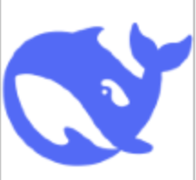

<div class="welcome-text">Welcome to grobob101's Blog World</div>

<div style="display: flex;">
    <!-- Navigation Bar on the Left -->
    <div style="width: 200px; padding: 20px; background-color: #f4f4f4; border-radius: 10px;">
        <h2>🎩 导航栏</h2>
        <div style="display: flex; flex-direction: column;">
            <a href="#technical-books" onclick="setActive(this)" style="text-decoration: none; color: white; padding: 10px; margin: 5px 0; background-color: black; border-radius: 5px; text-shadow: 0 0 5px white, 0 0 10px white;">技术书籍收藏</a>
            <a href="#ai-tools" onclick="setActive(this)" style="text-decoration: none; color: white; padding: 10px; margin: 5px 0; background-color: black; border-radius: 5px; text-shadow: 0 0 5px white, 0 0 10px white;">AI工具</a>
            <a href="#interview-practice" onclick="setActive(this)" style="text-decoration: none; color: white; padding: 10px; margin: 5px 0; background-color: black; border-radius: 5px; text-shadow: 0 0 5px white, 0 0 10px white;">技术面试练习</a>
        </div>
    </div>

    <!-- Main Content Area -->
    <div style="flex: 1; padding: 20px; margin-left: 20px;">
        <!-- Sections for Navigation Links -->
        <section id="technical-books" style="display: none;">
            <h2>技术书籍收藏</h2>
            <div style="display: flex; flex-wrap: wrap;">
                <a href="./object/机器学习.pdf" target="_blank">
                    
                </a>
                <a href="./object/模式识别.pdf" target="_blank">
                    
                </a>
                <!-- Add more books as needed -->
            </div>
        </section>
        <section id="ai-tools" style="display: none;">
            <h2>AI工具</h2>
            <div style="display: flex; flex-wrap: wrap;">
                <a href="https://chat.deepseek.com/" target="_blank">
                    
                </a>
                <a href="https://metaso.cn/?s=itaber&referrer_s=itaber" target="_blank">
                    
                </a>
                <!-- Add more tools as needed -->
            </div>
        </section>
        <section id="interview-practice" style="display: none;">
            <h2>技术面试练习</h2>
            <div style="display: flex; flex-wrap: wrap;">
                <a href="https://javaguide.cn/" target="_blank">
                    
                </a>
                <a href="https://xiaolincoding.com/" target="_blank">
                    
                </a>
                <!-- Add more interview materials as needed -->
            </div>
        </section>

    </div>
</div>

<script>
    function setActive(element) {
        // Remove the 'active' class from all navigation links
        const links = document.querySelectorAll('div a');
        links.forEach(link => {
            link.classList.remove('active');
            link.style.boxShadow = 'none';
        });

        // Add the 'active' class to the clicked link and apply cyan glow
        element.classList.add('active');
        element.style.boxShadow = '0 0 10px #00ffff';

        // Hide all sections
        const sections = document.querySelectorAll('section');
        sections.forEach(section => section.style.display = 'none');

        // Show the section corresponding to the clicked link
        const targetSectionId = element.getAttribute('href').substring(1);
        const targetSection = document.getElementById(targetSectionId);
        if (targetSection) {
            targetSection.style.display = 'block';
        }
    }

    // Hide all sections by default when the page loads
    window.onload = function() {
        // Set the initial active link and show the corresponding section based on the current URL
        const path = window.location.hash;
        if (path) {
            const activeLink = document.querySelector(`div a[href="${path}"]`);
            if (activeLink) {
                activeLink.classList.add('active');
                activeLink.style.boxShadow = '0 0 10px #00ffff';
                const targetSectionId = path.substring(1);
                const targetSection = document.getElementById(targetSectionId);
                if (targetSection) {
                    targetSection.style.display = 'block';
                }
            }
        } else {
            // Default to "博客" section if no hash is present
            const defaultLink = document.querySelector('div a[href="#blog"]');
            if (defaultLink) {
                defaultLink.classList.add('active');
                defaultLink.style.boxShadow = '0 0 10px #00ffff';
                const defaultSection = document.getElementById('blog');
                if (defaultSection) {
                    defaultSection.style.display = 'block';
                }
            }
        }
    };
</script>

<style>
    /* General image styles */
    .book-image, .ai-tool-image, .interview-image, .study-note-image {
        width: 200px;
        height: 200px;
        border-radius: 10px;
        transition: transform 0.3s ease;
        box-shadow: 3px 3px 10px rgba(0, 0, 0, 0.3);
        margin-right: 30px; /* Add 30px spacing between images */
    }

    /* Specific styles for book images */
    .book-image {
        border: 2px solid #c5cbc5; /* Green border for books */
    }

    .book-image:hover {
        transform: scale(1.2);
        box-shadow: 5px 5px 15px rgba(0, 0, 0, 0.5);
    }

    /* Specific styles for AI tool images */
    .ai-tool-image {
        width: 50px;
        height: 50px;
        border-radius: 100px;
        border: 2px solid #e9ebed; /* Blue border for AI tools */
    }

    .ai-tool-image:hover {
        transform: scale(1.2);
        box-shadow: 5px 5px 15px rgba(0, 0, 0, 0.5);
    }

    /* Specific styles for interview images */
    .interview-image {
        width: 50px;
        height: 50px;
        border-radius: 100px;
        border: 2px solid #fbf9f5; /* Yellow border for interviews */

    }

    .interview-image:hover {
        transform: scale(1.2);
        box-shadow: 5px 5px 15px rgba(0, 0, 0, 0.5);
    }
    @keyframes typing {
        from { width: 0; }
        to { width: 100%; }
    }

    @keyframes fadeOut {
        from { opacity: 1; }
        to { opacity: 0; }
    }

    .welcome-text {
        font-size: 2em;
        font-weight: bold;
        color: #040e0e;
        overflow: hidden;
        white-space: nowrap;
        animation: typing 3.5s steps(40, end), fadeOut 1s 3.5s forwards;
        margin-bottom: 20px;
    }

</style>